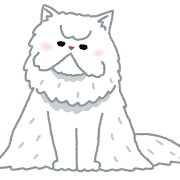

Welcome to The Minister's Cat Game😺
「大臣の猫ゲーム」はビクトリア朝時代の社交ゲームです。このゲームでは、指定された文字で始まる形容詞を使って猫を描写します。
例：「大臣の猫は『赤い』猫」、「大臣の猫は『意地悪な』猫、「大臣の猫は『美しい』猫、、、と続けていき、指定された文字で始まる形容詞を答えられなかった場合はゲーム失敗です。
現在の文字：あ
大臣の猫は、、、

猫！
送信！